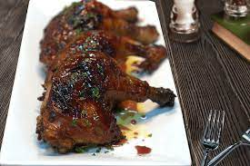

Glazed Chicken

Description
Sticky and Easy Honey Garlic Chicken made fast and simple, with the most amazing 5-ingredient honey
garlic sauce that is so good you'll want to use it on everything!
Ingredients
- 3 tablespoons apricot preserves
- 1 teaspoon fresh ginger paste (such as Gourmet Garden™)
- ½ teaspoon minced fresh rosemary
- 2 (8 ounce) boneless, skinless chicken breasts
- 1 teaspoon vegetable oil
- salt and ground black pepper to taste
Steps
- Ordered Step 1
- Ordered Step 2
- Ordered Step 3
- Ordered Step 4
- Ordered Step 5
- Ordered Step 6